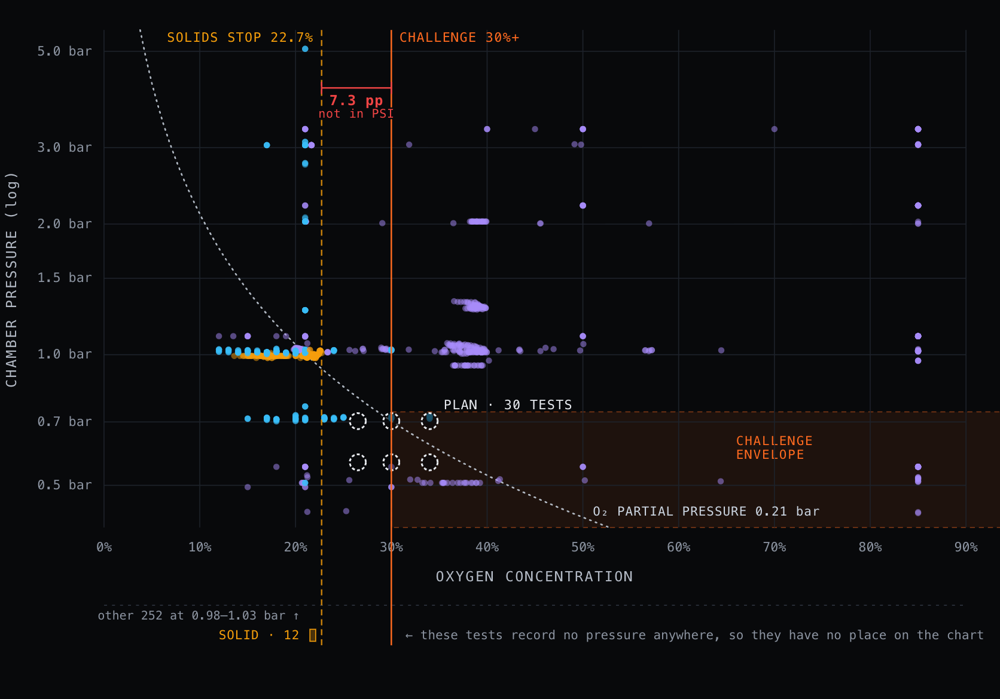

NASA Space Apps Challenge 2026 · Flame in Freefall · Rzeszów
The Apollo 1 crew died in a fire in an oxygen-filled spacecraft. The challenge says the Moon Base and pressurized rovers will run at 30% oxygen or more — “making materials much more flammable”.
A gap in the open archive, not in all of science: SoFIE-GEL burned PMMA on the ISS up to 34% O₂, but its points are not in PSI.
Coverage

The SI layer
“How would polyurethane foam burn at 30% O₂ and 10.2 psi, compared with Nomex?”
−7.3 pp
+43%
Distance from evidence — oxygen and pressure, separately, no weights.
Every source, quote and number is checked against the corpus before the answer is shown.
Where to test next
The 5 solid materials already burned closest to the ceiling, at each of 6 conditions, 1 test each — what BASS ran for 131 of its 174 conditions. The hollow circles on the map.
What a habitat designer gets today
The question
At the lunar atmosphere the honest answer is not a number. It is a measured gap on both axes — and a dashboard that cannot say that is not being honest with the people who build the habitat.
Method
Each step applies one stricter test. Nothing is dropped silently.
Every table is specified by hand — a generic parser silently mis-units this corpus: three pressure units (atm, bar, mmHg), two oxygen conventions (fraction and percent), free-text values like “1 atm”, a typo’d Samle Thickness header, and a literal 0 used as a missing-value sentinel. The arithmetic closes: 2,870 published rows, 959 rejected for a named cause, 1,911 rows that become test points — and 1,936 points, because BRE’s 18 test-day rows each list several oxygen levels and become 43 points. The 959: 861 empty rows at the tail of the CFI-G inverse sheet, 82 in three ACME tables whose columns this build does not map, 8 in the cross-experiment summary sheet, 8 Saffire rows (4 of them pre-test flow-visualisation records).